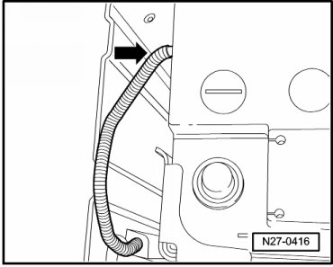
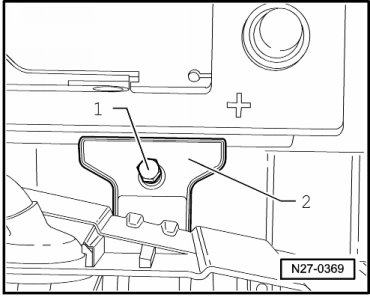
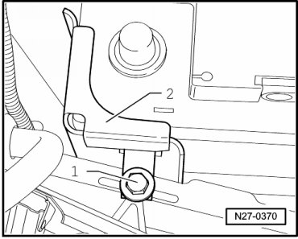
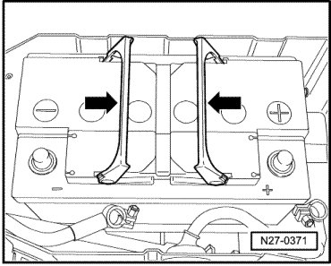
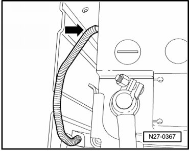

Battery under Left Front Seat
Battery under Left Front Seat
CAUTION!
Risk of injury. Observe warning notes and safety precautions --> [ Warnings and Safety Precautions ] Vehicle Damage Warnings
Special tools, testers and auxiliary items required
• Torque Wrench (V.A.G 1331/)
Removing
CAUTION!
When disconnecting battery, procedure must always be followed as described in the repair information --> [ Battery, with Auxiliary Battery or Two-Battery Layout, Disconnecting
and Connecting ] Battery, with Auxiliary Battery or Two-Battery Layout, Disconnecting and Connecting. Not adhering to sequence will result in the deactivation of Main Battery Switch -E74- and subsequent damage to electrical system components.
- Disconnect battery --> [ Battery, One-Battery Layout, Disconnecting and Connecting ] Battery, One-Battery Layout, Disconnecting and Connecting.
- Disconnect central gas vent hose - arrow - from top cover.

- Remove bolt - 1 - and battery hold-down bracket - 2 -.

- Remove bolt - 1 - and retainer bracket - 2 -.

- Fold battery handles - arrows - upward.

- Grasp battery by handles and lift from battery box.
Installing
CAUTION!
If battery is not secured properly, the following risks are possible:
• Shortened battery service life due to vibration damage (explosion hazard).
• if battery is not secured properly, the plates within the battery can be damaged.
• Damage to battery casing caused by bracket (possible electrolyte leakage, high subsequent costs).
• Reduced collision safety.
Install in reverse order of removal, noting the following:
- Install the bottom rail bracket - 2 - and tighten the bolt - 1 - to the specification --> [ Battery ] Battery.
- Install the battery bracket - 2 - and tighten the bolt - 1 - to the specification --> [ Battery ] Battery.
Ensure central breather hose is attached to battery - arrow -, and hose is not pinched during installation. Only then can battery be properly vented.

- After installing, verify battery is properly seated.
CAUTION!
• When connecting battery, always perform work procedure as described in repair information --> [ Battery, with Auxiliary Battery or Two-Battery Layout, Disconnecting
and Connecting ] Battery, with Auxiliary Battery or Two-Battery Layout, Disconnecting and Connecting. Not adhering to sequence will result in the deactivation of Main Battery Switch -E74- and subsequent damage to electrical system components.
• Observe notes for threaded connections of battery terminals --> [ Battery Post/Terminal ] Battery Post/Terminal.
- Reconnect battery --> [ Battery, One-Battery Layout, Disconnecting and Connecting ] Battery, One-Battery Layout, Disconnecting and Connecting.